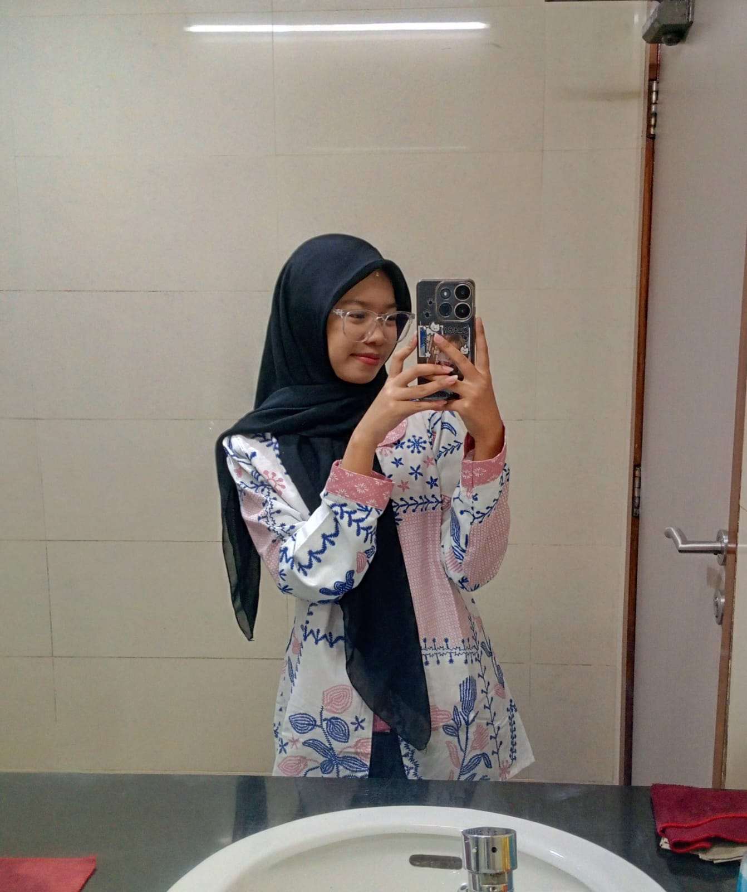

Pentingnya Pendidikan
Pendidikan membantu seseorang mengembangkan pengetahuan, keterampilan, pola pikir, dan kemampuan menyelesaikan masalah.
Pelajari materi →WELCOME TO MY PERSONAL WEBSITE
Tempat berbagi pengetahuan, belajar hal baru, dan mengenal perkembangan teknologi.
Kenali Saya
ABOUT ME
Halo! Saya Naisilla Mutiara Suci. Website ini merupakan ruang pribadi untuk memperkenalkan diri serta berbagi informasi mengenai pendidikan dan teknologi.
Saya percaya bahwa belajar merupakan proses yang berkelanjutan. Dengan memanfaatkan teknologi, kita dapat memperoleh pengetahuan baru, mengembangkan kreativitas, dan meningkatkan kemampuan.
Nama: Naisilla Mutiara Suci
Minat: Pendidikan dan Teknologi
Tujuan: Belajar dan berbagi pengetahuan
LEARN SOMETHING NEW
Materi untuk menambah wawasan dan mendukung proses pembelajaran.
Pendidikan membantu seseorang mengembangkan pengetahuan, keterampilan, pola pikir, dan kemampuan menyelesaikan masalah.
Pelajari materi →Buat jadwal belajar, tentukan prioritas, catat informasi penting, dan lakukan evaluasi secara rutin.
Pelajari materi →Pelajari cara mencari informasi, memeriksa kebenaran sumber, serta menggunakan internet secara bertanggung jawab.
Pelajari materi →Pendidikan adalah proses untuk memperoleh pengetahuan, keterampilan, nilai, dan pengalaman. Pendidikan dapat berlangsung melalui sekolah, keluarga, lingkungan, maupun pembelajaran mandiri.
Belajar efektif tidak selalu berarti belajar dalam waktu yang lama. Hal yang penting adalah memahami materi, berlatih secara konsisten, dan mengulang informasi yang telah dipelajari.
Literasi digital adalah kemampuan menggunakan teknologi digital untuk mencari, memahami, mengevaluasi, dan menyampaikan informasi dengan baik.
EXPLORE THE DIGITAL WORLD
Mengenal teknologi yang membantu kehidupan sehari-hari dan dunia pendidikan.
Artificial Intelligence (AI) merupakan teknologi yang memungkinkan komputer melakukan tugas seperti mengenali pola, memahami bahasa, dan membantu analisis.
Pelajari materi →Website adalah kumpulan halaman yang dapat diakses melalui browser. HTML membangun struktur dan CSS mengatur tampilannya.
Pelajari materi →Keamanan digital mencakup perlindungan akun, perangkat, dan informasi pribadi dari penyalahgunaan.
Pelajari materi →AI adalah bidang teknologi yang mengembangkan sistem komputer untuk melakukan tugas yang biasanya memerlukan kemampuan manusia.
AI dapat membantu pekerjaan, tetapi hasilnya tetap perlu diperiksa karena bisa keliru.
← Kembali ke TeknologiWebsite dapat dibuat menggunakan beberapa teknologi dasar yang memiliki fungsi berbeda.
Untuk website pribadi ini, HTML dan CSS sudah cukup untuk membuat halaman informasi yang menarik.
← Kembali ke TeknologiKeamanan digital bertujuan menjaga data dan akun agar tidak mudah diakses oleh pihak yang tidak berwenang.